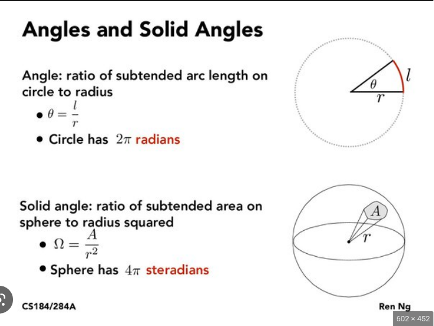

Candella: SI unit for luminous intensity (cd) Specifically a measure of luminous power per solid angle, but wavelengths are weighted. Weights given by luminosity function (model of human eyes sensitivity to different wavelengths)
Explanation of what a solid angle is
A wax candle has a luminous intensity of about 1cd.
Lumen: unit of luminous flux (\(\ell m\)), a measure of percieved power of light. Luminous flux weights the power of different wavelengths based on the human eye sensitivity.
\[
1\ell m = 1\text{cd} \times 1 \text{sr}
\]
Lux: unit of luminous flux per unit area. Example: flashlight same distance from wall but is the beam concentrated or spread out.
\[ 1\ell x = 1\ell m / m^2 \]
Random facts about light
\(c=\lambda \nu = 2.998e8\text{m/s}\)
Energy of light given by Plank’s constant times the frequency \[ E=h\nu \quad h=6.626\text{e-34Js} \]
Information we can get from studying light
apparent brightness
spectral energy distribution (find example)
Doppler shift
spectral line broadening (find example)
Zeeman line splitting (find example)
temporal variations
polarization
Applying physics principles we can also determine
light source’s distance
luminosity
temperature
chemical composition
size
rotation
magnetic fields
radial and transverse velocity
intervening absorption by gas and dust
Astronomical sources categorized as point and extended
Point: most stars
Extended: sol, nebulae, resolved galaxies, diffuse synchotron emission, CMB, IR dust emission in the Solar system.
Light measured from the two sources has to be handled differently
The Magnitude Scale
A star’s apparent brightness is referred to as magnitude.
Higher number equals fainter object
“Cumbersome” system inherited from antiquity and still widely used.
Originally based on appearance of stars between sunset and astronomical twilight (see figure 3)
What is twilight
Sunset \(\rightarrow\) end of twilight broken into 6 segments. Stars that appear in the first segment were magnitude 1 (the brightest), stars appearing in the second time segment were magnitude 2, …
Human eye the only tool to quantify magnitudes for centuries.
Invention of photometers revealed two facts
Magnitude 1 was too broad. Sirius much brighter than Regulus but both are mag1.
Cannot identify magnitude of a single star by itself. Must compare stars through difference in magnitudes.
No zero from log \(\therefore\)\[ \boxed{
\text{Pogson Equation: }
m_i=-2.5 \log F_i + C
}
\] where \(C\) is the zero-point offset. Astronomers have to agree a specific star has a specified magnitude (see Bolometric magnitude and IAU 2015 resolution B2 for examples).
What difference in magnitude results from a small difference in apparent brightness? \[
\Delta m = -2.5\log\left[\frac{F_2}{F_1}\right]
\quad \rightarrow \quad
f(x)=-2.5\log(x)
\] Use a Taylor series to expand the log function \[
f(x)=f(a)+\frac{1}{1!}f^\prime(a)(x-a)+
\frac{1}{2!}f^{\prime\prime}(a)(x-a)^2+
\frac{1}{3!}f^{\prime\prime\prime}(a)(x-a)^3
+\ldots
\] Need to change base to compute derivatives correctly
Let \(a=1\) (i.e. \(F_2=F_1\)) \[ f(x)=-1.086(x-1)+1.086 \frac{(x-1)^2}{2} + \ldots \]
Evaluate this function at \(x=F_2/F_1\) under the condition that \(F_2=F_1+\epsilon\). \(\therefore x\approx 1\) and \((x-1)^n \approx 0\) for \(n>1\).
Suppose star 1 has a magnitude of \(m_1=3.5\) and star 2 \(m_2=3.6\). Than \[ \Delta m = 0.1 \] and star 2 is about 10% brighter. \[ 0.1 \approx \frac{\Delta F}{F_1} \]\[ 0.1F_1 \approx (F_2-F_1) \]\[ F_2 \approx 1.1F_1 \]
Modern Magnitude system
Magnitude and Wavelength Dependence
The human eye’s sensitivity to to different wavelengths means sources can appear to have different magnitudes, even if they are the same luminosity. Compare a flashlight to the IR beam from a TV remote.
The Pogson equation is an example of the visual magnitude.


{kind=link}